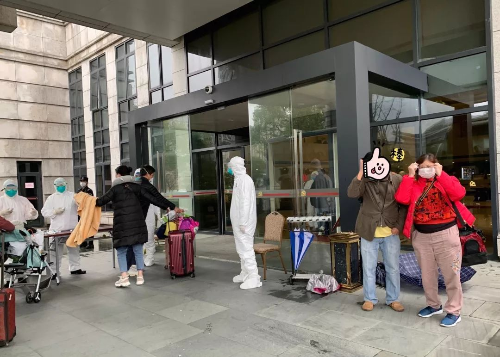
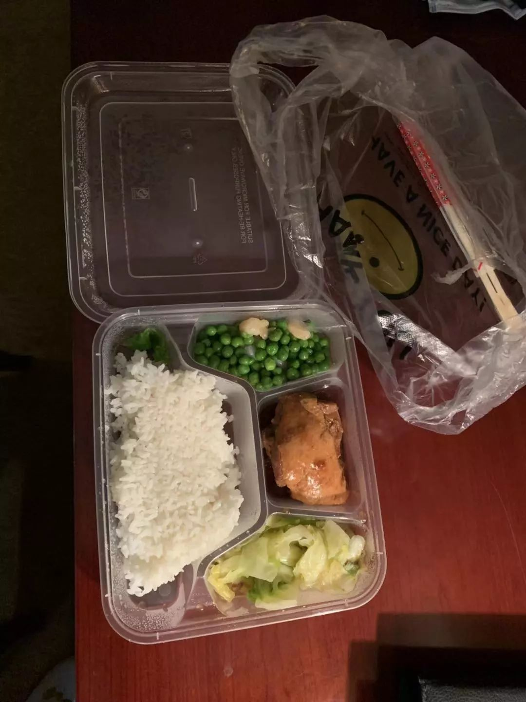
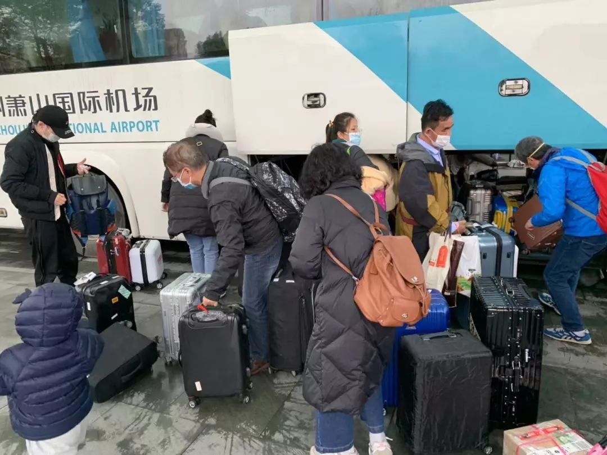

风暴中心：我的家离华南海鲜市场很近｜约稿
原文链接 备份链接 编者按 这篇约稿来自一名化名为“平安”的武汉大学生，记述了她从返乡、封城，再到过年所经历的种种。这个特殊的春节，绝望与希望同在，寂静与喧嚣并存。身处「风暴中心」，她的心理有什么样的变化？让我们一起来看看她的五日。 “ …

摘要：1月26日晚间，杭州官方发布“新型冠状病毒肺炎”最新通报，25日9时至24时，杭州市新增新型冠状病毒感染的肺炎确诊病例15例，其中2名确诊患者正是乘坐TR188次航班抵达杭州萧山机场的乘客。
文 | 殷盛琳 程静之
编辑 | 王珊
如果按照原本的计划，大年初一这天，杭州人戴军要带妻儿一起去探望父母，给小辈包几个红包。这次从新加坡旅游回来，他还给家人买了礼物。但现在，由于从新加坡回杭州的TR188航班上乘坐了116名武汉旅客，其中两人发烧，他们一家三口只能分别待在杭州市委党校的三个房间里，与其他216名乘客及11名机组人员一起，接受持续两周的隔离医学观察。
这场突如其来、事先毫不知情的的同乘经历，让这架航班上的乘客不得不重新审视正在全国蔓延的疫情。他们中的绝大多数经历了人生第一次在机场度过的除夕夜，也头一遭面对这样的突发事件。
有人崩溃大哭，也有人想到17年前非典时期隔离在家的经历，有人担心自己是否已经感染病毒。慌乱之中，这群素不相识的陌生人也展露出相同处境的盟友之谊。他们在微信群里互相鼓劲，相信能一起挨过去。
1月26日晚间，杭州官方发布“新型冠状病毒肺炎”最新通报，25日9时至24时，杭州市新增新型冠状病毒感染的肺炎确诊病例15例，其中2名确诊患者正是乘坐TR188次航班抵达杭州萧山机场的乘客。

酒店外医务人员为乘客测量体温。受访者供图
党校里的隔离房间
1月25日上午11点，飞机抵达杭州14小时后，戴军一家终于坐上了机场大巴。大巴的终点是杭州市委党校。航班上，除了116名武汉乘客，其余多为去新加坡的杭州旅行团成员，为了方便安排，避免交叉感染，大巴车上，大家按照旅行团为单位坐在一起。另外也有像戴军一家这样的散客，以及零星几个外国人。
车上有不少小孩，闹腾得很，气氛从最开始的凝重慢慢缓和起来，甚至有人调侃说，“我们要养老去啦。”
12点多，大巴抵达一栋白色外墙，灰色顶盖的建筑，这里便是市委党校的宾馆区，TR188航班219位乘客及11位机组人员将在这里进行两周的隔离观察。
那时他们并不知道，同机的两位武汉乘客因发烧被送到萧山区第一人民医院，其他武汉乘客被隔离在机场附近的酒店。
入住党校宾馆之前，戴军和其他乘客需要先确认健康状况。穿着防护服，佩戴医用口罩及护目镜的医务人员在宾馆大门外摆了两张桌子，逐一为乘客测量体温。推着宝宝车的年轻妈妈走到桌前，医务人员弯下腰给小孩子做检查。
戴军被分到一间十几平米的房间，有电视和电脑，可以在室内办公。每个人拿到两份文件，《新型冠状病毒感染的肺炎健康科普知识》以及《来杭人员集中医学观察告知书》，上面明确了有关肺炎的防护以及隔离的时长、注意事项。另外，在办完入住之后，党校的工作人员组织大家建了一个微信群，工作人员在群里分别介绍了自己的职责，从生活到卫生，每项需求都有定点对接的人。
由于是被紧急隔离，起飞时，新加坡仍然是夏天的温度，很多人以为到达杭州后能打车或者被家人接回，并没有准备羽绒服。一些乘客开始在群里提需求，杭州人曾先生说，大家的物资准备非常匮乏，需要的物品很多，“小到牙膏、牙刷、大牙签、酒精、棉棒，大到棉衣、各种衣服。”带着宝宝的乘客，奶粉没带够，也在群里求助。接到信息汇总后，就有工作人员去紧急采购。

工作人员为被隔离乘客送来棉衣。受访者供图
之后，大家在宾馆大厅分开，各自进入房间。午餐很快分发下来，豌豆炒虾仁、手撕包菜、大虾，荤素搭配，还有水果。碗筷是一次性的。自此之后，每日三餐由工作人员统一敲门发放。
当天下午，一份落款为“市委党校隔离点临时指挥部”的通知就发到微信群里。规定在隔离期内，留观人员非必要不许离开房间，不许串门，禁止点外卖。如果需要家属送东西的，可以放在党校对面的指定地点，工作人员登记后定时运送并转交。每天，乘客们需要在上午9点和下午三点半各量一次体温，在群内及时报告相关情况。
工作人员送餐时，22岁的杭州女孩尹笑每次都将门拉开一条缝，伸出手接过塑料餐盒，道一声“谢谢”。一次，一名工作人员给尹笑送饭时没有戴好口罩，“你把口罩戴好，我再出来。”尹笑提醒他。
“我们都不怕，你们就更不要怕了。”对方说。
隔离观察的措施完善，但因一次意外的航班，被困在十几平米房间里的乘客仍不可避免地感到恐慌。
晚上九十点钟，一名女生哭了，在群里发语音，声音都是颤抖的。
“我有点难受，可以过来人吗？”
“不用急，医生马上过去了。”工作人员回复。
“来了吗，我真的好怕。”
大家开始互相鼓励。有人安慰她，“不要紧张，喝点热水，窗户打开透透气”；有人转发一些抖音上的搞笑视频，试图岔开话题；有人在群里问：“可以喝酒吗，家里的小吃、特产可以带来吗？”
另一些人感觉自己“没病也要关出病来了”，“我觉得好多人身体没有毛病，内心都好恐惧”。后来，党校就在群里配备了一名心理医生，为大家提供心理咨询。
隔离让他们的生活彻底被打断。几名新加坡的留学生担心赶不回学校考试，还有探亲人员会误了回新加坡的航班。戴军从事餐饮业，平时工作繁忙，现在哪也去不了，他干脆让自己静下来，泡茶喝。上高二的儿子被隔离在另一个房间，他打电话跟儿子说，让哥哥把寒假作业送过来，特殊情况也不能偷懒。尹笑和妈妈、姑姑、外婆一一联系报平安，剩下的时间就和隔壁房间的男朋友视频，并打算刷完美剧《良医》。做汽车行业的曾先生领到了自己的笔记本电脑，未来这段日子，他打算过规律的生活，他和孩子在同一个房间，还可以辅导孩子作业。
但关掉手机，不再浏览满屏的消息后，很多人还是忍不住想：为什么事件没有通知大家飞机上有武汉人？自己究竟会不会感染？

隔离期间的午餐。受访者供图
坐在前排的武汉乘客
早在几个月前，44岁的曾先生就订好了去新加坡的往返机票。这趟旅行是他给上小学的儿子的一份礼物，想带儿子感受一下新加坡的国立大学、博物馆和美术馆。他们定在1月19日下午出发，24日下午回国，还能赶上除夕的年夜饭，也不耽误春节走亲戚。
出发之前，曾先生就看到了新型冠状病毒肺炎的相关新闻，不过病例只出现在武汉，官方也通报未发现明显人传人现象，曾先生觉得问题不大。
没有料到的是，事情在两天后就转变了一个风向。钟南山院士在央视的采访中肯定了病毒人传人现象，国内确诊病例的数字不断翻新，新加坡很快也出现了首例确诊病例。回程成了曾先生最大的忧虑，“毕竟这么多中国人在一个密闭的飞机里。”
曾先生是TR188航班中为数不多的散客，他记得，过海关时，新加坡并没有对他进行体温检测。上机后，他和儿子坐在经济舱，位置靠后，一路往后走，他发现有些人戴了口罩，有些人则没有，不过机组人员都戴上了口罩。
除去疫情的阴影，这趟旅程与以往并没有什么不同。四个多小时里，曾先生和儿子照常进餐、喝饮料、上洗手间，睡一会儿又玩一会儿iPad。飞机提前到达了，曾先生还挺开心，“能提前回家吃年夜饭了。”
与曾先生不同，戴军在登机前就意识到TR188航班上很可能有武汉乘客。“新加坡樟宜机场是全世界最漂亮的机场，大家都在拍照，戴口罩的人很少，结果到了登机口，突然就发现怎么那么多中国人戴着口罩？”
戴先生当时就感觉有点奇怪，上高二的儿子在手机上查到酷航在一天前就发了微博，通知1月23日至1月27日武汉新加坡往返航班被取消，已购买机票的旅客可进行退改申请，其中一条是“可提出更改出发地或目的地申请”，他们猜测那些戴口罩的旅客有可能是打算飞回家乡不得不改签至杭州的武汉人。登机后，发现包括空姐在内的机组人员也佩戴了口罩，戴军更加坚信了自己的判断。
因为不想错过回家过除夕，戴军一家仍然坐上了TR188航班。他现在想来有些后怕：一家三口在乘机过程中并没有佩戴口罩。之前，杭州市内的口罩已经接近脱销，家人托他在新加坡代购一些回国，他去了几个药店和超市，都卖光了。走进711，还没来得及开口，工作人员直接说，我们没有口罩。“就等于中国人已经把一个核心的旅游区域的口罩全部买完了。”戴军说。
飞机上，戴军一家三口的座位在高级经济舱，比较靠前，曾有空姐来问，可以给他们换一个更安静点的地方，但最终也没有给换。后来在机场隔离区，戴军找过这个空姐问原因，空姐告诉他，本以为大部分武汉人在经济舱，想把一家三口调到前面，安全一些。结果一问才发现，商务舱里面基本全部都是武汉人。
因为有很多小孩子，机舱里比较吵闹，戴军记得有几个乘客在咳嗽，儿子在旁边提醒他，戴军并没有太在意。他赶着回去做年夜饭，出来旅行前，已经备好了食材放在冰箱里。
他们谁都没有想到，事情早已偏离既定的轨道。
1月25日晚9点45分，TR188航班提前15分钟到达杭州萧山机场，大家各自取下行李，准备下机。这时，机上广播突然响起，要求所有人放下行李，坐回原位。大概十分钟过后，三四名穿着白色防疫服的工作人员上机，要求每个人填写一份健康说明表格，包括户籍所在地、近28天出行情况、跟武汉人是否有过接触、身体是否感到不适等信息。
“我们以为只是例行检查，是必须要做的。”尹笑说。她和男朋友去新加坡跟团旅行，也是1月19日出发，24日回国，航班由旅行社安排。一路上，飞机遇过两三次颠簸，有小孩总在哭闹，原本害怕疫情的她忧虑感加重了。除了吃东西，她和男友一直都戴着口罩。
表格填写完后，他们在座位上等待。机上的广播又开始播报，来自武汉、去过武汉、和武汉人有过接触的旅客，坐在原位不要下机。
走到前排时，曾先生发现整个舱位都没动，有的还用武汉方言聊天，他心里立马“咯噔”了一下，“原来觉得可能是个位数，怎么可能有100多个武汉人！”他不知道怎么跟儿子描述眼前的事，只是叮嘱口罩不许拿下来。
同样看到这一幕的尹笑感到愤怒。她发现附近留下来的人大概就有七八个，最近的只隔了三排，下飞机时她瞄了一眼那个人的健康信息表，户籍信息是湖北十堰。那些武汉乘客，有人低着头不说话，有人似乎避开了她的眼神。
“都到杭州了，为什么会有这样子的事情？”尹笑忍不住哭了。下飞机坐接驳车时，防疫人员发放了新口罩，她在自己的口罩外面又加了一层。
那时，他们的家人还不知道发生了什么。曾先生的妻子已经准备好了饭菜、烧好了洗澡水，等待父子俩回家，一起度过除夕夜。尹笑的朋友在机场大厅里接机，母亲则在家里等着她。

党校隔离宾馆房间。受访者供图
除夕的雨
“请TR188的乘客在指定的通道行走，或者是指定的通道离开。”
杭州萧山机场的广播循环播放。戴军回忆，出来到机场大厅后，乘客就被隔离了，现场拉起警戒线，将大厅分成三部分。穿着防护服的医务人员隔在TR188乘客和其他乘客中间。周围有很多警察，穿着防护服的人冲他们喊：往左边走，就在那等！
“这种架势已经吓得不敢说话了”，戴军说。现场先是安静了一会儿，随着时间推移，陆续有人不耐烦，和工作人员起了冲突，质问他们怎么还不让大家走？他上前疏解，告诉对方，要先解决一下大家的个人问题，飞机上没有餐食，大家还饿着肚子。
很快，机场人员给大家提供了免费的餐食，不限量。
一名机场负责人告诉他们，等武汉乘客的确诊信息过来，如果都没有问题，他们就可以在家隔离。曾先生告诉妻子，晚饭赶不上吃了，争取一结束就回去，“不管怎样，回来以后会自我隔离，也跟亲戚打电话，过年不走动了。”
大家还期待着，可能武汉人全部检查完了，就可以放行。那是他们当时所做的最坏打算。
但之后的几个小时里，他们没有收到任何放行的消息。戴军心里明白，可能真的要被隔离观察了。
一月的杭州天气阴冷，外面下起了淅淅沥沥的小雨。很多人上飞机穿的是短袖，厚衣物在行李箱里，行李还没有取到，大概是为了空气流通，大厅里的空调并没有开，有人开始感觉到冷。
冷暖交替间，有人心跳加速，开始出现不适；一名孩子体温上升，伴有咳嗽，医护人员量过体温后，将孩子抱走了。工作人员提供了毛毯，人们靠喝热水取暖。戴军记得有个高血压的老年人找不到药，家人着急地向工作人员求助，要买准确类型的降压药。
新年的钟声在机场循环的广播声中敲响。零点那一刻，有人打破了沉重的气氛，彼此问候“新年快乐”，一些人脸上露出了笑容，孩子们在一旁蹦蹦跳跳。
接近凌晨一点，老人和三十多名小孩需要休息了，大厅里的位置不够人们平躺，一些成年人找来箱子之类的东西垫在地上，把座位留给了老人和小孩。很多人没有睡意，他们和机场负责人在现场开了一个小会，得到的回复是，对武汉乘客的检查包括抽血、口腔黏膜，要等到早上9点。
戴军看着妻儿入睡，自己睡不着，在机场隔离区乱晃，后来干脆躲到卫生间抽烟。一起抽烟的几个乘客商量，能不能找机会离开，他听了立马劝人家，“你要对自己负责，也要对家人负责对不对？你跑出去，政府明天肯定来抓你。”
第二天是大年初一，机场提供了早饭，包子、鸡蛋、粥，但还是没有消息。直到9点半，他们在新闻上看到，TR188飞机上的所有人员已经到市委党校隔离入住。“那个时间，其实我们还在机场。”曾先生说，也是这时他们才知道，飞机上有两个武汉乘客发烧了。
“说句实话，到现在我们心里都挺懵圈的，我们反而是通过网络的渠道，去了解这个事情的信息和过程。”曾先生说。
就在他们前往市委党校的路上，1月25日中午，针对网络上有关“武汉人被新加坡遣返”的谣言酷航发布声明澄清，“由于中国湖北省所有公共交通网络暂时停运”，酷航才取消了相关航班。
尹笑觉得酷航的声明有些不负责任，“保障他们改签，我们这些正常旅游回国的人就不用保障了吗？”她也为新加坡的声明感到担忧——如果是遣返，就说明在机场哪也没去；如果不是，他们的路径可能就会和部分人有重合。
刚毕业一年的新人律师阿含庆幸自己放弃了春节旅行计划。她原本订了1月24日23点15分从杭州飞往新加坡的航班，航班号为TR189，与TR188是同一架飞机。当天到机场后，凌晨左右，她看到整个机场的航班都处于停滞状态，觉得情形不对，就去搜了微博。
大概凌晨2点多，播报称可以登机了，“我觉得很惊讶，因为TR188是九点多着落的，看照片上穿着防护服的人员在检测每位乘客，那我们理解中300多位乘客没那么快下机。”阿含说，她推算了时间，认为消毒的过程很短，她不放心，最终和152位乘客一起放弃了这趟行程。

乘坐大巴车去往隔离点。受访者供图
事故与故事
曾先生对2003年的非典疫情还有印象。那是他毕业后工作的第一年，杭州有很多被隔离的小区楼房、学生宿舍，家人拿着最大的容器去买醋，认为醋可以消毒，跑了许多药店买板蓝根和口罩，囤了粮食。有过那段经历后，他觉得不必为这次的疫情感到恐慌。
1月27日，曾先生起床后吃早饭时在群里看到一条信息，那是一条新闻链接，“杭州新增确证15例，萧山区3例，其中机场排查2例。”患者男，45岁，为1月25日乘TR188次航班自新加坡到达萧山机场武汉乘客，入境排查时体温38.1℃，无咳嗽等其它临床表现；患者女，26岁，入境排查时自述有咽痛症状，体温36.8℃，无其它临床表现，现在杭州市定点医疗机构隔离治疗。
尽管此前已有了心理准备，得到准确的消息后，曾先生还是不免感到焦急，“外面的人看着像故事，里面人人是事故啊。”
乘客微信群里有人开始怀疑，现在没有体温异常的人是否也存在感染风险。
“不是每个人都（喉液）采样了吗？”
“我没有。”“我们也没有。”
这时，他们才知道，党校并不是对所有人都进行了喉液采样。对此，医护人员答复他们，采样根据每个房间的情况进行，48小时后才能出结果。
他们从新闻里得知，1月26日晚，又有两架抵达杭州的国际航班上有15名武汉籍旅客，分别来自沙巴和泰国。海关通报，如发现疑似病例1-2名，需隔离20名旅客（前三排后三排）；如三人及以上体温异常，全机旅客隔离。
“求告知，那几个人（确诊）的座位号。”一名乘客在群里说。
“抱歉，我们不掌握这个信息，我跟你们得到的信息一样多。”党校工作人员回复。
群里的TR188乘客开始进行自我排查，甚至画出了一张机舱位置分布图。一名工作人员试图制止，“不要以讹传讹，积极配合党校和政府的工作。”
曾先生觉得，此时他们最需要的是知道确诊病例的座位号，而不是从新闻上了解自己的处境，“我们想做的无非是（信息）畅通和及时。”
就在得知两名武汉乘客确诊的这一天，从日本名古屋飞往上海的南方航空CZ380遭遇了与TR188类似的处境。不过，上海乘客在登机前就发现了同行者中有湖北人。“我们还看到他们在那量体温，有人见过他们吃退烧药。没有确诊的情况下，只能拒绝登机！”一名上海乘客说。据另一乘客描述，下午一点多，16名湖北乘客乘坐CZ380专机回国，但其他80余名乘客滞留在机场。1点半左右，领事馆人员赶到现场，为滞留乘客免费改签。据航班软件信息显示， CZ380将于1月27日下午16:08预计到达上海。
在TR188一些乘客的要求下，今天早晨，杭州市委党校给每个房间配发了抗病毒的药。那是一种中药配方颗粒，三天的量，早晚各一次，冲泡服用。
下午1点，党校人员开始在走廊里调试送饭机器人。“大家好 ，可爱的小花生来给大家送饭了，祝您用餐愉快。”
工作人员在群里解释，“各位亲，明天实现全部机器人送餐。全国第一个！”
（文中人物为化名，王一然对本文亦有贡献）
版权声明：本文所有内容著作权归属于搜狐享有，未经搜狐书面许可，不得转载、摘编或以其他形式使用，另有声明除外。
后台回复”读者群”, 加入更多讨论
作者简介

*殷盛琳*
正在跌跌撞撞地认识世界。
作者简介
*程静之*
认识远方的你。


小昼
微信扫一扫赞赏作者 赞赏
长按二维码向我转账
受苹果公司新规定影响，微信 iOS 版的赞赏功能被关闭，可通过二维码转账支持公众号。
原文链接 备份链接 编者按 这篇约稿来自一名化名为“平安”的武汉大学生，记述了她从返乡、封城，再到过年所经历的种种。这个特殊的春节，绝望与希望同在，寂静与喧嚣并存。身处「风暴中心」，她的心理有什么样的变化？让我们一起来看看她的五日。 “ …
原文链接 备份链接 点击上方物质生活参考加星标！ 物质生活参考 作者：彭梁洁 来源：物质生活参考（ID：wzshck） 01. 襄阳，距离武汉300多公里，湖北省GDP第二大城市，自古被称为“兵家必争之地”，是《射雕英雄传》里郭靖黄蓉夫妇 …
原文链接 备份链接 桐柏县中心医院 作者供图 作者李强 这次肺炎疫情爆发后，我在老家陆续出现了一些这场疫情中经常被提及的症状。 我的老家是河南省南阳市桐柏县，离武汉仅200多公里。2020年1月23日，农历猪年腊月二十九，我开始干咳、 …
原文链接 备份链接 封城第三天，小雨连绵，潮湿阴冷。这两天都没出门，通知跨江交通封停，汉口汉阳和武昌开始隔离，分开管控，早上站在窗边，十五分钟，路上没有一辆轿车，像以前举办马拉松实行交通管控，全程封路，中途驶过一个蓝衣外卖员，看着像饿了么 …
原文链接 备份链接 这名医生担心疫情在黄冈下面的县市地区进一步扩散。「现在所有人都把目光放在武汉，少有人注意到周边地区。这些地区的医疗物资本来就不足，要是没人关注的话，就会变成第二个武汉。」 文｜****苏东 编辑｜**** …